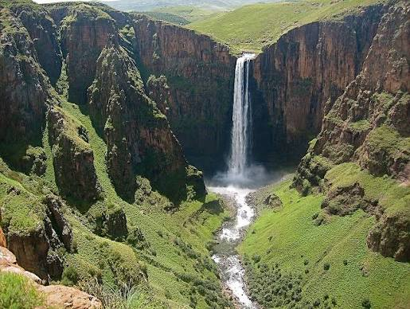
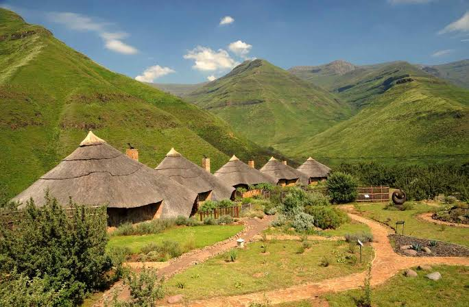

About Us
This website is delacated to provide support and information to showcasing the natural beauty, cultural heritage and traveling experiences of Lesotho.
Mission
To provide visitors with useful information About tourist attraction, Accommodation and culture Activities.
Objectives
Promotes local tourist attraction, help visitors plan trips, showcase Basotho culture.
Vission
To become a trusted online platform that promotes Lesotho as beautiful place to look for, unique and unforgettable tourist destination.
Activities tourist can enjoy
- Moutain Hiking
- Horse riding
- Photography
- Birdwatching
- Historical tours
- Cultural village tours
- Camping
- Pony trekking
Destination
 Thaba Bosiu:A historically significant mountain associate with King Moshoeshoe I and the formation of Basotho Nations.
It is located between the Orenge and Caledon Rivers in the Maseru District of Lesotho.
Often called the “Moutain at Night” from a local legend that it grew taller at night and tapped enemies by the darkness.
Serves as traditional burial and capital in 1824 to unify and protect scatted communities during wars.
Guidance is offered for tours lead up the mountain to see 19th century stones ruin and royal graves.
wikipedia
Thaba Bosiu:A historically significant mountain associate with King Moshoeshoe I and the formation of Basotho Nations.
It is located between the Orenge and Caledon Rivers in the Maseru District of Lesotho.
Often called the “Moutain at Night” from a local legend that it grew taller at night and tapped enemies by the darkness.
Serves as traditional burial and capital in 1824 to unify and protect scatted communities during wars.
Guidance is offered for tours lead up the mountain to see 19th century stones ruin and royal graves.
wikipedia
 Katse Dam: A major engineering landmark surrounded by mountains.
Located in Thaba-Tseka, Malibamat’so River roughly 1993 to 2000 meter above the see level.
It was built between 1991 and 1997, its primary purpose was to collect and gather water for future use again, it transfers water to South Africa through tunnels as a source income of Lesotho.
Offer guided tour of the dam wall, visitor center, mountain view via Mafika-Lisiu Pass, Boating, fishing, and Botanical Garden.
visit Lesotho
Katse Dam: A major engineering landmark surrounded by mountains.
Located in Thaba-Tseka, Malibamat’so River roughly 1993 to 2000 meter above the see level.
It was built between 1991 and 1997, its primary purpose was to collect and gather water for future use again, it transfers water to South Africa through tunnels as a source income of Lesotho.
Offer guided tour of the dam wall, visitor center, mountain view via Mafika-Lisiu Pass, Boating, fishing, and Botanical Garden.
visit Lesotho

Malentsunyane Falls:Is a 192-meter-high water fall, located in Lesotho near the town of Semonkong. The best time to visit is summer mostly, from October to April offer a green landscape and fuller water flow from the season rain. wikipedia

Tsehlanyane National Park Kwon for its mountain environment walking opportunities. Located in Maluti mountain in Leribe District. It protects rare indigenous Che-Che forest stands mountain, accommodate home to Maliba Lodge, Lesotho’s premier luxury eco lodge offering five-star chalets and self-catering option. wikipedia